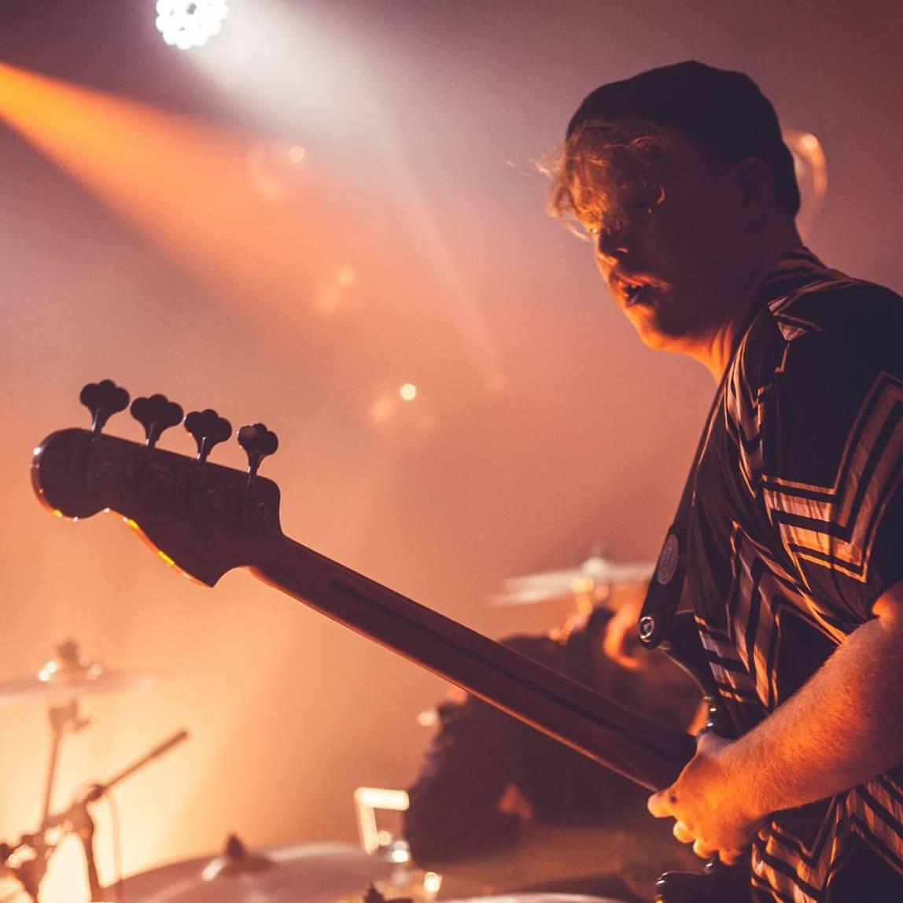

Max a donné son tout premier concert à l’âge de 14 ans, au chant dans un groupe de punk rock. C’est avec ses premiers concerts qu’il apprenait les bases de la vie d’un groupe.
À 16 ans il jouait déjà dans quelques cafés-concerts des Hauts-de-France puis, au fur et à mesure des rencontres, il a monté d’autres projets avec d’autres personnes, bref jouer dans des groupes de rock était un truc qui l’obsédait (c’est toujours le cas).
Il a donc commencé à avoir un rythme assez intéressant, à faire ses premières expériences en studio, ses premiers vrais clubs, et jouer en dehors de la région Nord Pas-de-Calais...
À l’âge de 22 ans il décroche une bourse afin d’intégrer une école de formation professionnelle du métier de musicien, l’EF2M.
C’est là-bas qu'il rencontre ses futurs acolytes quelques-uns de ses futurs acolytes, notamment un membre de son projet actuel qui était alors professeur de guitare.
En sortant de cette formation réussi, Maxime intègre le conservatoire de Jazz durant 2 ans afin de développer son sens de l’improvisation. Pendant ce temps, il continue à développer ses projets personnels et à accompagner des artistes en France et à l’étranger. C’est aussi pendant ce temps qu’il vient rejoindre les rangs d’Holispark qui occupe aujourd’hui la majeure partie de son temps.